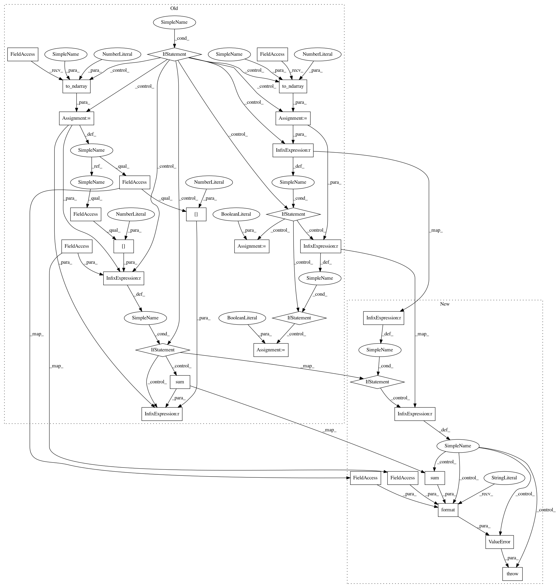

e61efb0dcc08199e2551fac26d27234cf8e7cf0f,geomstats/geometry/product_riemannian_metric.py,ProductRiemannianMetric,_detect_intrinsic_extrinsic,#ProductRiemannianMetric#Any#Any#,71
Before Change
def _detect_intrinsic_extrinsic(self, point, point_type):
assert point_type in ["vector", "matrix"]
if point_type == "vector":
point = gs.to_ndarray(point, to_ndim=2)
// detect if intrinsic of extrinsic
if point.shape[1] == self.dimension:
intrinsic = True
elif point.shape[1] == sum(
[man.dimension + 1 for man in self.manifolds]):
intrinsic = False
else:
point = gs.to_ndarray(point, to_ndim=3)
if point.shape[2] == self.dimension:
intrinsic = True
elif point.shape[1] == sum(
[man.dimension + 1 for man in self.manifolds]):
intrinsic = False
return intrinsic
@staticmethod
def _get_method(manifold, method_name, metric_args):
After Change
def _detect_intrinsic_extrinsic(self, point, point_type):
assert point_type in ["vector", "matrix"]
index = 1 if point_type == "vector" else 2
if point.shape[index] == self.dimension:
intrinsic = True
elif point.shape[index] == sum(
[dim + 1 for dim in self.dimensions]):
intrinsic = False
else:
raise ValueError("Input shape does not match the dimension of"
"the manifold, {0} expected {1} or {2}".format(
point.shape, self.dimension, sum(
[dim + 1 for dim in self.dimensions])))
return intrinsic
@staticmethod
def _get_method(metric, method_name, metric_args):
In pattern: SUPERPATTERN
Frequency: 4
Non-data size: 31
Instances
Project Name: geomstats/geomstats
Commit Name: e61efb0dcc08199e2551fac26d27234cf8e7cf0f
Time: 2020-03-10
Author: nicolas.guigui@inria.fr
File Name: geomstats/geometry/product_riemannian_metric.py
Class Name: ProductRiemannianMetric
Method Name: _detect_intrinsic_extrinsic
Project Name: geomstats/geomstats
Commit Name: 085898307fd7a5998bdb34a0f9626b177db75a61
Time: 2020-03-30
Author: nicolas.guigui@inria.fr
File Name: geomstats/geometry/product_manifold.py
Class Name: ProductManifold
Method Name: _detect_intrinsic_extrinsic
Project Name: geomstats/geomstats
Commit Name: c029ed8fa1c2fc7eb8b48b56fdffa3756efd9c2f
Time: 2020-03-11
Author: nicolas.guigui@inria.fr
File Name: geomstats/geometry/product_manifold.py
Class Name: ProductManifold
Method Name: _detect_intrinsic_extrinsic
Project Name: geomstats/geomstats
Commit Name: ad6ed1772f781386b5e10857fd9a6a660539c2d0
Time: 2020-03-30
Author: nicolas.guigui@inria.fr
File Name: geomstats/geometry/product_riemannian_metric.py
Class Name: ProductRiemannianMetric
Method Name: _detect_intrinsic_extrinsic
Project Name: geomstats/geomstats
Commit Name: e61efb0dcc08199e2551fac26d27234cf8e7cf0f
Time: 2020-03-10
Author: nicolas.guigui@inria.fr
File Name: geomstats/geometry/product_riemannian_metric.py
Class Name: ProductRiemannianMetric
Method Name: _detect_intrinsic_extrinsic